揪好森住客 IG 推薦
露營區住宿・同組 1 張・組別 camp-001
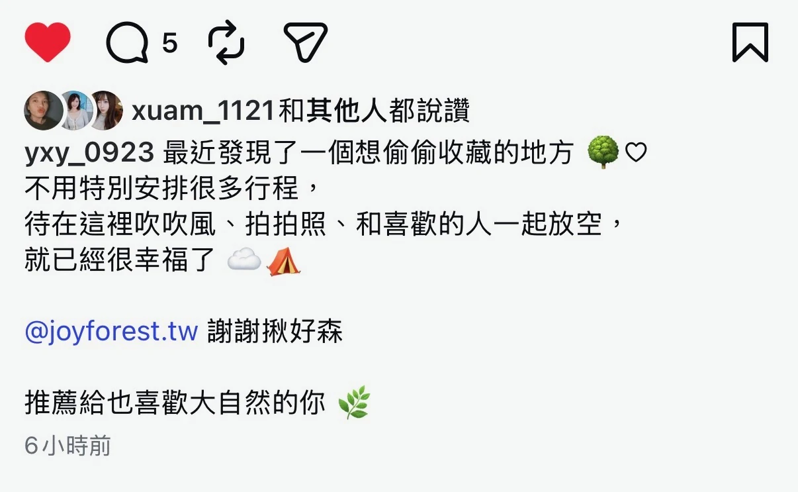
查看可搜尋的截圖文字
①5 xuam_1121和其他人都說讚 yxy_0923 最近發現了一個想偷偷收藏的地方 參0 不用特別安排很多行程， 待在這裡吹吹風、拍拍照、和喜歡的人一起放空， 就已經很幸福了 A @joyforest.tw 謝謝揪好森 推薦給也喜歡大自然的你 必 6小時前
真實來源・原圖存證
每一則都保留客人原始截圖；你看到的帳號、星等、留言與照片，就是公開評價當下的完整證據。
原始截圖是主體，文字僅供搜尋與無障礙閱讀，不取代證據。
同一段推薦若分成多張畫面，已依組別合併並照順序呈現。
露營區住宿・同組 1 張・組別 camp-001

①5 xuam_1121和其他人都說讚 yxy_0923 最近發現了一個想偷偷收藏的地方 參0 不用特別安排很多行程， 待在這裡吹吹風、拍拍照、和喜歡的人一起放空， 就已經很幸福了 A @joyforest.tw 謝謝揪好森 推薦給也喜歡大自然的你 必 6小時前
露營區住宿・同組 1 張・組別 camp-002
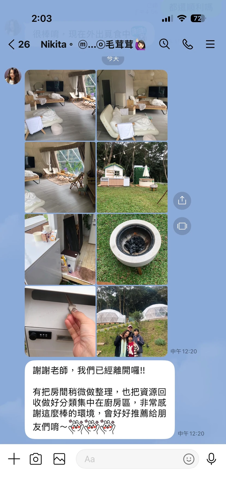
2:03 の ⑦2 很棒唷，現在外出覓 <26 Nikita。 m...◎毛茸茸 今大 中午12:20 謝謝老師，我們已經離開囉！！ 有把房間稍微做整理，也把資源回 收做好分類集中在廚房區，非常感 謝這麼棒的環境，會好好推薦給朋 友們唷~ 中午12:20 十 Aa
露營區住宿・同組 1 張・組別 camp-003
< 評鑑 整體狀況及整潔度 10.0 設施與設備 10.0 位置 10.0 服務 10.0 CP值 10.0 全部（1） 最有參考價值v 所有住宿評鑑（1 超棒 10.0 說走就走的城市小旅行，享受難得的愜意輕鬆 2月 20,2026 過年期間在偶然機會下，搜尋到了這家應才營運不久的「揪 好森」；起初只是被『一次只接受一組客人』預約所吸引 （不喜人多吵雜：p），但實際入住後卻是滿滿的驚喜迎接著我 們。>>機能便利：位於城市內，開車5-10分鐘即達大賣 場與超商，補給超方便。>>硬體完善：帳篷設備齊全且乾 淨，戶外廚房與活動區規劃到位，是真正的「懶人露營」。 入住當天適逢北部難得的冷天，晚上升個小火簡單烘烤食 物、取暖，宵夜時光全家再窩在一起吃點心、觀看大屏幕 Netflix電影，太享受喇～ 最棒的是，真的就是我們一家包 場，不擔心影響別人也可享有難得的清靜，非常推薦給小家 庭、三五好友、閨密們或是情侶前來體驗唷。 隱藏部分 Hsin |家庭（未成年兒童隨行）|台灣 於2月2026入住1晚 住宿回覆 謝謝你們 很高興能給你們開心的家庭時光 無更多結果。
逐則保存評論者頭像、帳號名稱、星等、日期、留言與客人上傳的照片；可點擊來源連回商家頁。
2 個月前・露營區／包場住宿
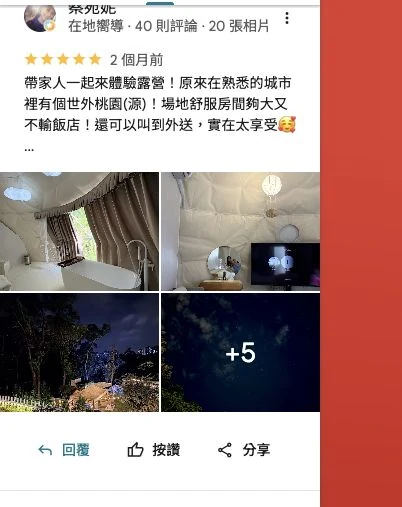
帶家人一起來體驗露營！原來在熟悉的城市裡有個世外桃園(源)！場地舒服房間夠大又不輸飯店！還可以叫到外送，實在太享受🥰 …
2 個月前・露營區／包場住宿
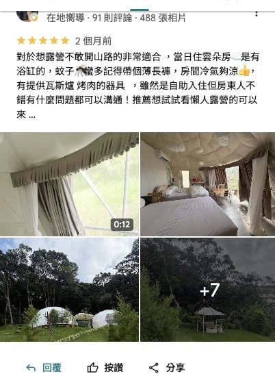
對於想露營不敢開山路的非常適合 ，當日住雲朵房☁️是有浴缸的，蚊子🦟蠻多記得帶個薄長褲，房間冷氣夠涼👍，有提供瓦斯爐 烤肉的器具 ，雖然是自助入住但房東人不錯有什麼問題都可以溝通！推薦想試試看懶人露營的可以來 …
3 個月前・露營區／包場住宿
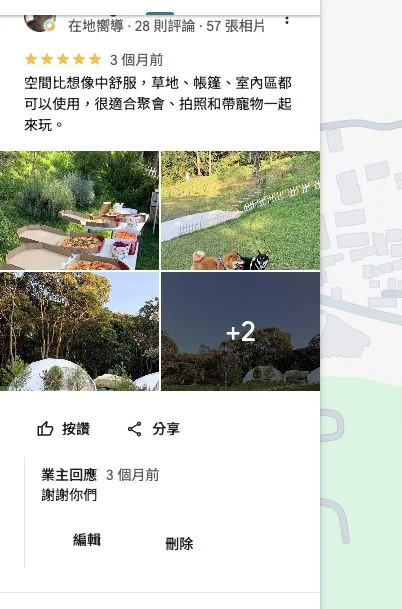
空間比想像中舒服，草地、帳篷、室內區都可以使用，很適合聚會、拍照和帶寵物一起來玩。
業主回應 3 個月前 謝謝你們
1 個月前・待人工複核
快樂美好的一天 設備蠻齊全且也蠻新的 感覺得出來老闆的用心🧡 本來有點擔心東西帶的不夠多 殊不知現場什麼都有欸😄 讚👍
3 個月前・露營區／包場住宿
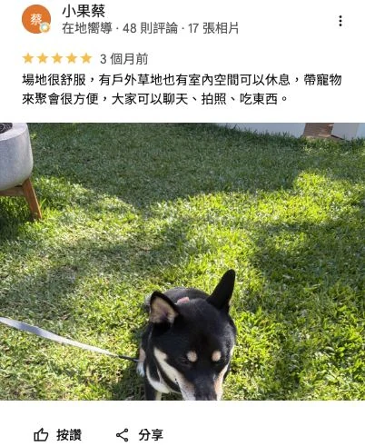
場地很舒服，有戶外草地也有室內空間可以休息，帶寵物來聚會很方便，大家可以聊天、拍照、吃東西。
業主回應 3 個月前 😄，謝謝你們，很歡樂的寵物聚會 …
3 個月前・露營區／包場住宿
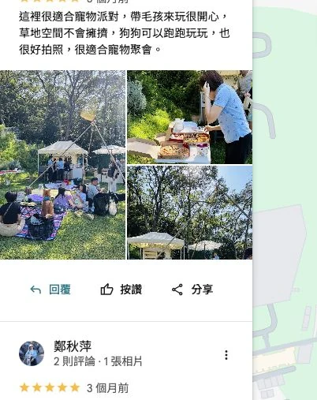
這裡很適合寵物派對，帶毛孩來玩很開心，草地空間不會擁擠，狗狗可以跑跑玩玩，也很好拍照，很適合寵物聚會。
3 個月前・露營區／包場住宿
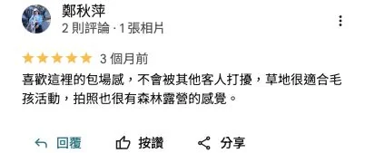
喜歡這裡的包場感，不會被其他客人打擾，草地很適合毛孩活動，拍照也很有森林露營的感覺。
3 個月前・露營區／包場住宿
很舒服的私人聚會空間，有自己的專屬區域，有充足的烹飪工具，還有木炭可以烤肉，適合一群朋友一起聊天，到了晚上配合燈光很漂亮，天氣好可以看到滿天星星！
業主回應 3 個月前 謝謝你們 😄很高興你們有愉快的時光 …
3 個月前・露營區／包場住宿
超適合辦聚餐或生日聚會的地方！戶外空間很漂亮，草地很舒服，晚上燈光很有氣氛，朋友們都一直拍照 😂帳篷也很大、很舒服！ …
3 個月前・露營區／包場住宿
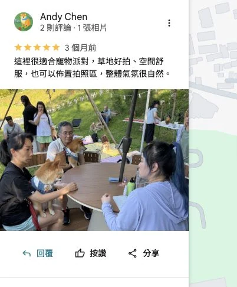
這裡很適合寵物派對，草地好拍、空間舒服，也可以佈置拍照區，整體氣氛很自然。
2 個月前・露營區／包場住宿
跟家人一起露營⛺️體驗到乾淨漂亮的露營帳篷還有可以跑跳玩球的空間，晚上點燈好浪漫💕 …
3 個月前・露營區／包場住宿
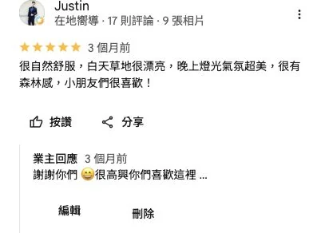
很自然舒服，白天草地很漂亮，晚上燈光氣氛超美，很有森林感，小朋友們很喜歡！
業主回應 3 個月前 謝謝你們 😄 很高興你們喜歡這裡 …
3 個月前・露營區／包場住宿
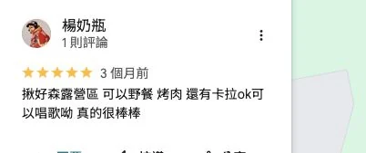
揪好森露營區 可以野餐 烤肉 還有卡拉ok可以唱歌呦 真的很棒棒
3 個月前・露營區／包場住宿
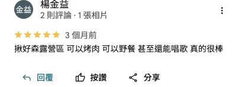
揪好森露營區 可以烤肉 可以野餐 甚至還能唱歌 真的很棒
3 個月前・露營區／包場住宿
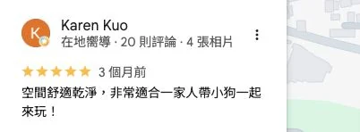
空間舒適乾淨，非常適合一家人帶小狗一起來玩！
3 個月前・露營區／包場住宿
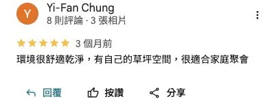
環境很舒適乾淨，有自己的草坪空間，很適合家庭聚會
4 個月前・待人工複核
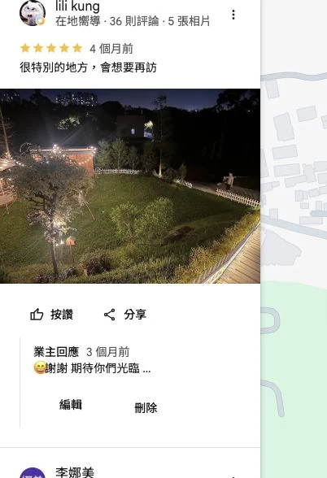
很特別的地方，會想要再訪
業主回應 3 個月前 😄謝謝 期待你們光臨 …
1 個月前・露營區／包場住宿
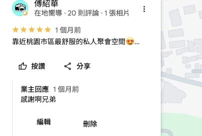
靠近桃園市區最舒服的私人聚會空間😍 …
業主回應 1 個月前 感謝啊兄弟
3 個月前・露營區／包場住宿
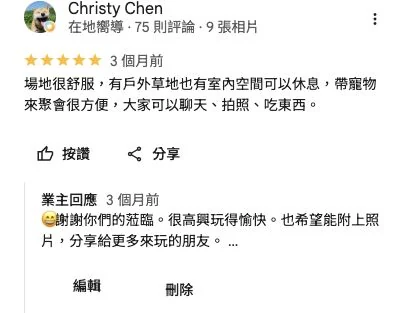
場地很舒服，有戶外草地也有室內空間可以休息，帶寵物來聚會很方便，大家可以聊天、拍照、吃東西。
業主回應 3 個月前 😄謝謝你們的蒞臨。很高興玩得愉快。也希望能附上照片，分享給更多來玩的朋友。 …
2 個月前・露營區／包場住宿
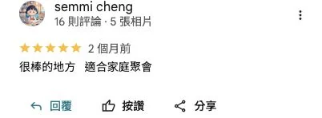
很棒的地方 適合家庭聚會
5 天前・露營區／包場住宿
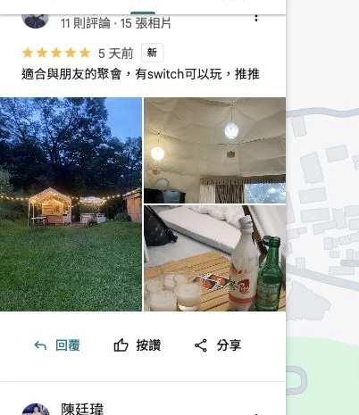
適合與朋友的聚會，有switch可以玩，推推
1 週前・露營區／包場住宿
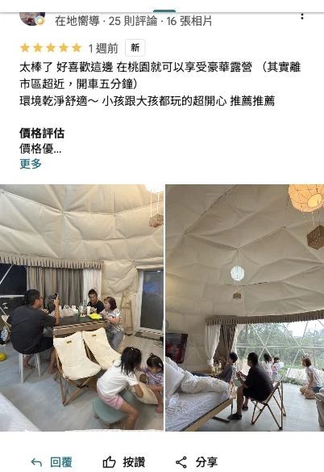
太棒了 好喜歡這邊 在桃園就可以享受豪華露營 （其實離市區超近，開車五分鐘） 環境乾淨舒適～ 小孩跟大孩都玩的超開心 推薦推薦
1 週前・露營區／包場住宿＋攝影服務
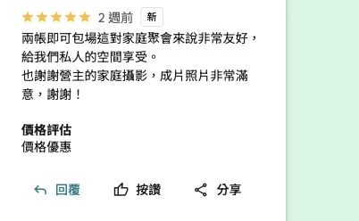
兩帳即可包場這對家庭聚會來說非常友好，給我們私人的空間享受。 也謝謝營主的家庭攝影，成片照片非常滿意，謝謝！
1 個月前・露營區／包場住宿
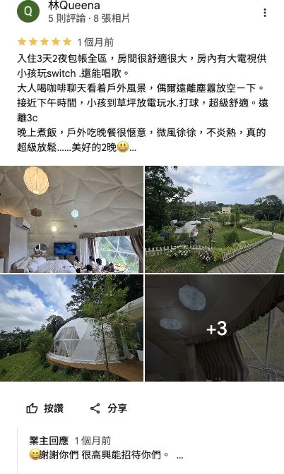
入住3天2夜包帳全區，房間很舒適很大，房內有大電視供小孩玩switch .還能唱歌。 大人喝咖啡聊天看着戶外風景，偶爾遠離塵囂放空ㄧ下。 接近下午時間，小孩到草坪放電玩水.打球，超級舒適。遠離3c 晚上煮飯，戶外吃晚餐很愜意，微風徐徐，不炎熱，真的超級放鬆……美好的2晚😃 …
業主回應 1 個月前 😄謝謝你們 很高興能招待你們。 …
2 個月前・露營區／包場住宿
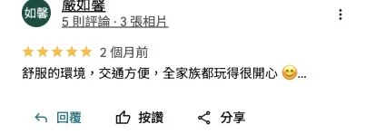
舒服的環境，交通方便，全家族都玩得很開心 😊 …
2 個月前・露營區／包場住宿
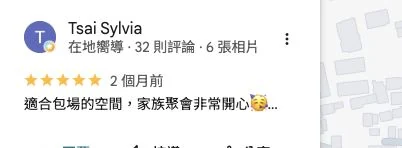
適合包場的空間，家族聚會非常開心🥳 …
3 個月前・露營區／包場住宿
寵物來到草皮上遊樂超快樂，還有陰涼處可以休息，很適合寵物派對聚會！好玩又好外拍的景點❤️🔥 …
3 個月前・待人工複核
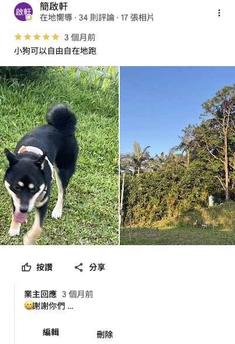
小狗可以自由自在地跑
業主回應 3 個月前 😄謝謝你們 …
1 週前・待人工複核
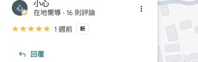
此評論者留下五星評價，未附文字。
1 個月前・待人工複核
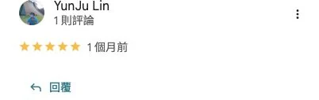
此評論者留下五星評價，未附文字。
1 個月前・待人工複核
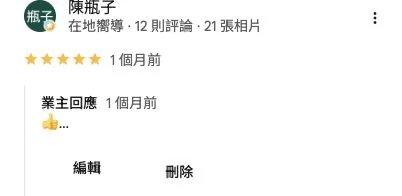
👍 …
業主回應 1 個月前 👍 …
2 個月前・待人工複核
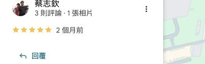
此評論者留下五星評價，未附文字。
3 個月前・待人工複核
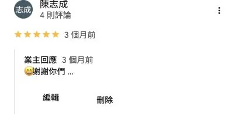
😄謝謝你們 …
業主回應 3 個月前 😄謝謝你們 …
上次編輯：4 個月前・待人工複核
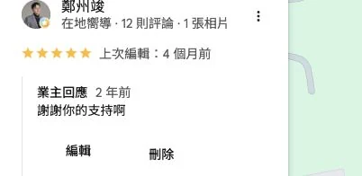
謝謝你的支持啊
業主回應 2 年前 謝謝你的支持啊
2 年前・待人工複核
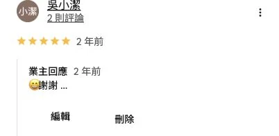
😄謝謝 …
業主回應 2 年前 😄謝謝 …
1 個月前・露營區／包場住宿
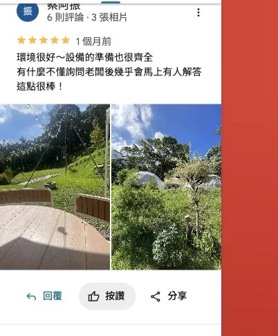
環境很好～設備的準備也很齊全 有什麼不懂詢問老闆後幾乎會馬上有人解答這點很棒！
1 個月前・露營區／包場住宿
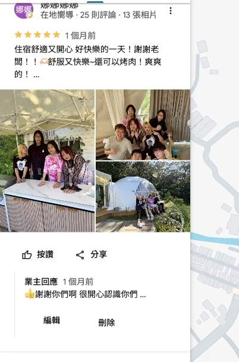
住宿舒適又開心 好快樂的一天！謝謝老闆！！🫶🏻舒服又快樂~還可以烤肉！爽爽的！ …
業主回應 1 個月前 👍 謝謝你們啊 很開心認識你們 …
上次編輯：3 個月前・待人工複核
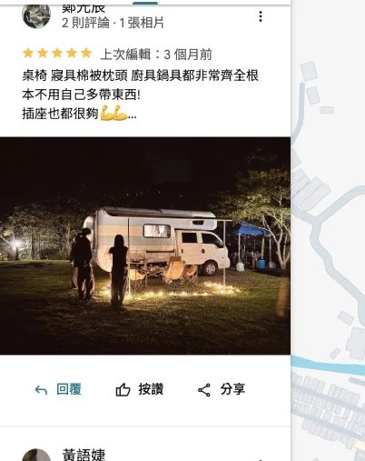
桌椅 寢具棉被枕頭 廚具鍋具都非常齊全根本不用自己多帶東西! 插座也都很夠💪💪 …
3 個月前・露營區／包場住宿
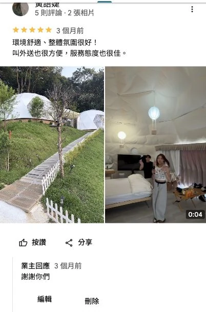
環境舒適、整體氛圍很好！ 叫外送也很方便，服務態度也很佳。
業主回應 3 個月前 謝謝你們
3 年前・待人工複核
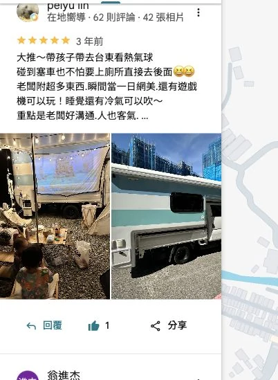
大推～帶孩子帶去台東看熱氣球 碰到塞車也不怕要上廁所直接去後面😆😆 老闆附超多東西.瞬間當一日網美.還有遊戲機可以玩！睡覺還有冷氣可以吹～ 重點是老闆好溝通.人也客氣. …
11 個月前・待人工複核
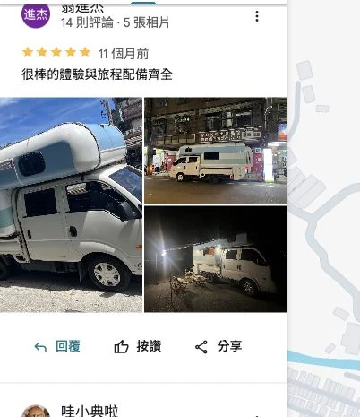
很棒的體驗與旅程配備齊全
3 個月前・露營區／包場住宿
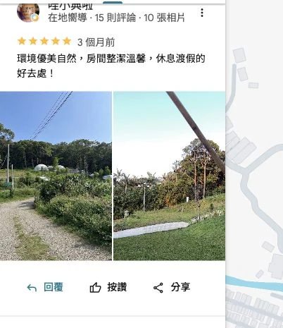
環境優美自然，房間整潔溫馨，休息渡假的好去處！
3 年前・待人工複核
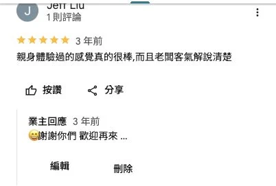
親身體驗過的感覺真的很棒,而且老闆客氣解說清楚
業主回應 3 年前 😄謝謝你們 歡迎再來 …
4 年前・露營區／包場住宿
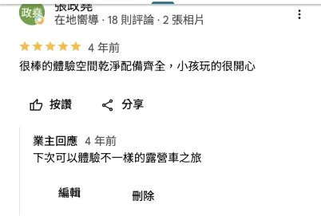
很棒的體驗空間乾淨配備齊全，小孩玩的很開心
業主回應 4 年前 下次可以體驗不一樣的露營車之旅
4 年前・待人工複核
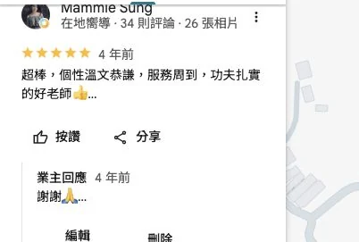
超棒，個性溫文恭謙，服務周到，功夫扎實的好老師👍 …
業主回應 4 年前 謝謝🙏 …
3 年前・露營區／包場住宿
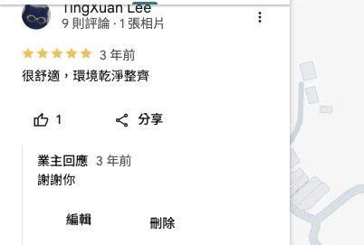
很舒適，環境乾淨整齊
業主回應 3 年前 謝謝你
4 年前・露營區／包場住宿
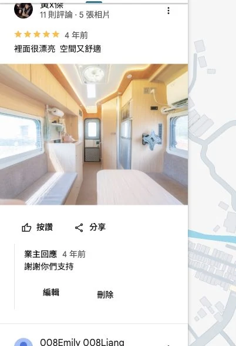
裡面很漂亮 空間又舒適
業主回應 4 年前 謝謝你們支持
4 年前・待人工複核
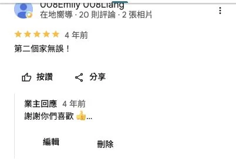
第二個家無誤！
業主回應 4 年前 謝謝你們喜歡 👍 …
3 年前・待人工複核
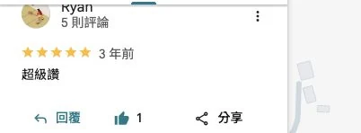
超級讚
1 週前・露營區／包場住宿
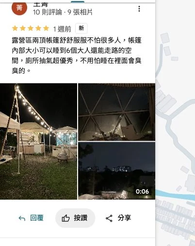
露營區兩頂帳篷舒舒服服不怕很多人，帳篷內部大小可以睡到6個大人還能走路的空間，廁所抽氣超優秀，不用怕睡在裡面會臭臭的。
1 週前・待人工複核
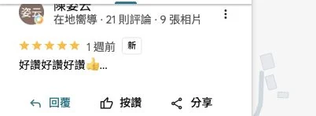
好讚好讚好讚👍 …
1 週前・待人工複核
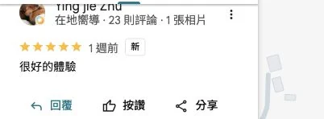
很好的體驗
1 週前・露營區／包場住宿
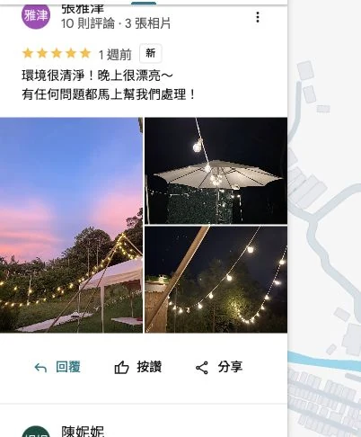
環境很清淨！晚上很漂亮～ 有任何問題都馬上幫我們處理！
3 週前・露營區／包場住宿
很寧靜舒適的空間
3 週前・露營區／包場住宿
環境超漂亮，設備很齊全，有電動麻將和Switch 還有卡拉OK可以玩，可以架星空電影院，廚房該有的都有，有提供各種調味料、瓦斯罐、甚至是木炭，冷氣很涼、熱水很熱，老闆人超級好，快問快答。噢寵物友善超讚的
3 週前・露營區／包場住宿
乾淨👍🏻設備齊全👍🏻 包場安靜不會被打擾 孩子們玩得很開心 謝謝老闆的用心 …
11 個月前・待人工複核
此評論者留下五星評價，未附文字。
1 個月前・待人工複核
此評論者留下五星評價，未附文字。
4 個月前・待人工複核
此評論者留下五星評價，未附文字。
1 年前・待人工複核
此評論者留下五星評價，未附文字。
1 年前・待人工複核
此評論者留下五星評價，未附文字。
3 年前・待人工複核
謝謝你的好評
業主回應 3 年前 謝謝你的好評
4 年前・待人工複核
感謝啊
業主回應 4 年前 感謝啊
畫面與文字依原始資料保存；Google 評價可能因評論者後續編輯或平台狀態而變動。本站另外提供文字稿，是為了搜尋引擎、AI 檢索與螢幕閱讀器辨識，原始截圖仍是主要證據。